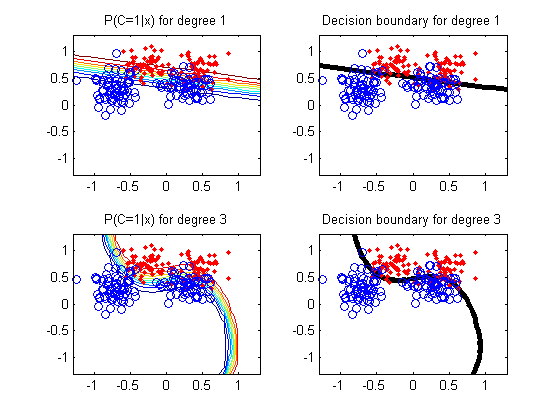

X=load('rip_dat_tr.txt');
Xt=load('rip_dat_te.txt');
Ntrain = size(X,1); Ntest = size(Xt,1);
ytrain = X(:,3);
X(:,3)=[];
ytest = Xt(:,3);
Xt(:,3)=[];
Xtrain = X; Xtest = Xt; clear X Xt
figure
polyOrders = [1 3];
for trial=1:length(polyOrders)
Polynomial_Order = polyOrders(trial);
lambda = 1/100;
Range=1.3;
Step=0.1;
[xs,ys]=meshgrid(-Range:Step:Range,-Range:Step:Range);
[ngrid, ngrid]=size(xs);
grid = [reshape(xs,ngrid*ngrid,1) reshape(ys,ngrid*ngrid,1)];
XtrainPoly = ones(Ntrain,1);
XtestPoly = ones(Ntest,1);
gridPoly = ones(ngrid*ngrid,1);
for i = 1:Polynomial_Order
XtrainPoly = [XtrainPoly Xtrain.^i];
XtestPoly = [XtestPoly Xtest.^i];
gridPoly = [gridPoly grid.^i];
end
[N,D] = size(XtrainPoly);
model = logregFit(XtrainPoly,ytrain,'lambda', lambda,'standardizeX', false);
wMAP = model.w;
fn = @(w)LogisticLossSimple(w, addOnes(XtrainPoly), ytrain);
[f,g,H] = penalizedL2(wMAP, fn, lambda);
C = inv(H);
[trainPredLabels] = logregPredict(model, XtrainPoly);
[testPredLabels] = logregPredict(model, XtestPoly);
fprintf('\n\n 0-1 error using MAP Value\n');
Train_Error = 100 - 100*sum(trainPredLabels == ytrain)/Ntrain
Test_Error = 100 - 100*sum(testPredLabels == ytest)/Ntest
subplot2(2,2,trial,1)
Posterior = 1./(1+exp(-addOnes(gridPoly)*wMAP));
contour(xs,ys,reshape(Posterior,[ngrid,ngrid]));
hold on
plot(Xtrain(find(ytrain==1),1), Xtrain(find(ytrain==1),2),'r.');
plot(Xtrain(find(ytrain==0),1), Xtrain(find(ytrain==0),2),'o');
title(sprintf('P(C=1|x) for degree %d', Polynomial_Order))
subplot2(2,2,trial,2)
[cc,hh]=contour(xs,ys,reshape(Posterior,[ngrid,ngrid]),[0.5 0.5]);
set(hh,'linewidth',4,'color','k');
hold on
plot(Xtrain(find(ytrain==1),1), Xtrain(find(ytrain==1),2),'r.');
plot(Xtrain(find(ytrain==0),1), Xtrain(find(ytrain==0),2),'o');
title(sprintf('Decision boundary for degree %d', Polynomial_Order))
end
0-1 error using MAP Value
Train_Error =
13.2000
Test_Error =
11.4000
0-1 error using MAP Value
Train_Error =
12.4000
Test_Error =
9.7000
